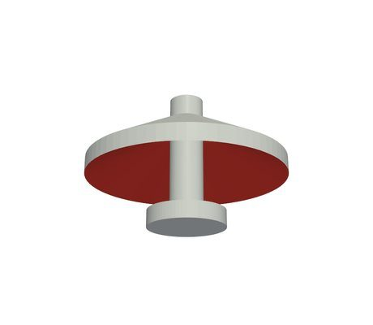
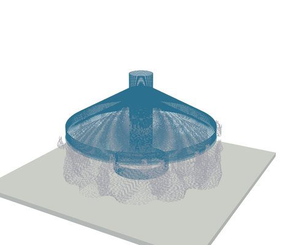
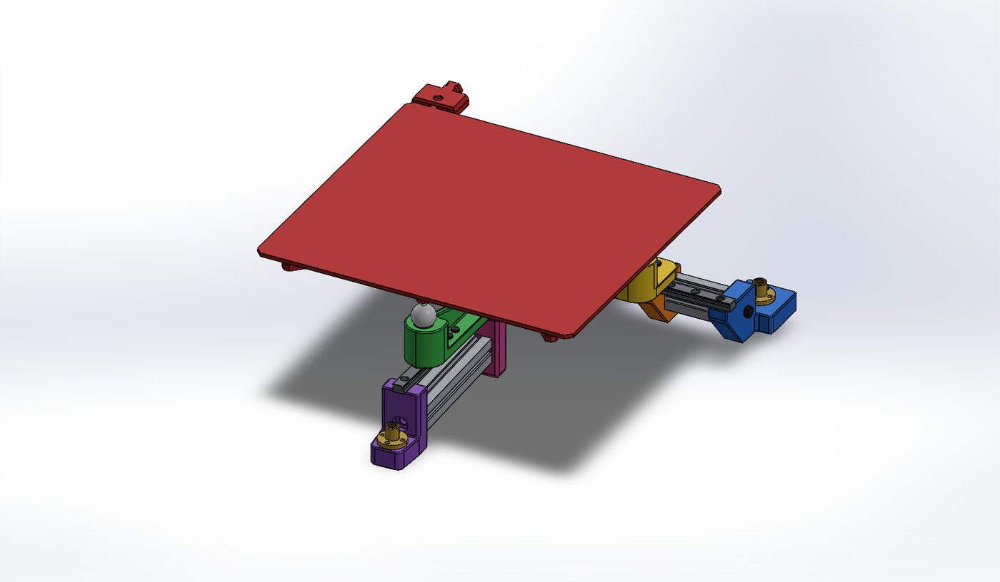
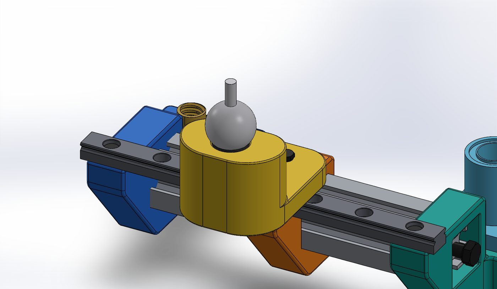

Five-axis 3D printer (S5)
Support material −35% and zero collisions on a 40-part benchmark
- Slicing software that curves print layers along a part's load paths (for strength) or around its overhangs (for less support), using FEA, collision checks and CuraEngine toolpaths.
- Against normal flat slicing: support 32.1 → 21.0 g, none at all on 14 parts; overhang area needing support −57%.
- Strength mode: stress across the layers (the weak direction) cut on 7 of 8 test parts, by up to 56%.
- Designed parts of the machine CAD, including the tilting bed's gimbal joint, and wrote the printer's custom five-axis firmware kinematics.
- Used agentic AI to build a simplified mass-spring-damper model of the printer that tests its vibration in seconds; its loads feed FEA of the critical brackets.
Honest limit: curved-layer prints are about 3.4× slower than flat ones today (the bed keeps turning). That is the next thing to fix.